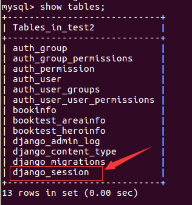
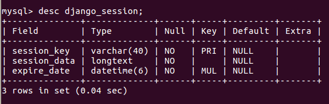
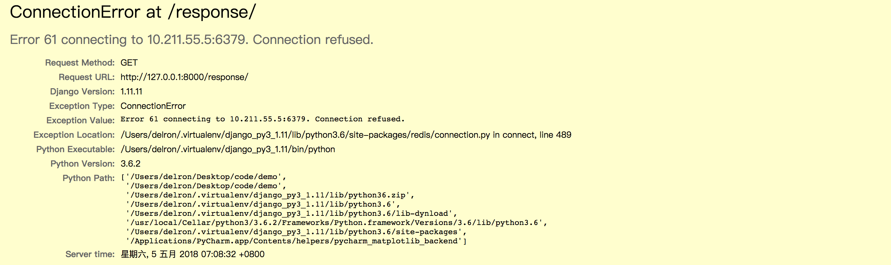

Session配置和存储
1 启用Session
Django项目默认启用Session。
可以在settings.py文件中查看，如图所示

如需禁用session，将上图中的session中间件注释掉即可。
2 存储方式
在settings.py文件中，可以设置session数据的存储方式，可以保存在数据库、本地缓存等。
2.1 数据库
存储在数据库中，如下设置可以写，也可以不写，这是默认存储方式。
SESSION_ENGINE='django.contrib.sessions.backends.db'
如果存储在数据库中，需要在项INSTALLED_APPS中安装Session应用。

数据库中的表如图所示

表结构如下

由表结构可知，操作Session包括三个数据：键，值，过期时间。
2.2 本地缓存
存储在本机内存中，如果丢失则不能找回，比数据库的方式读写更快。
SESSION_ENGINE='django.contrib.sessions.backends.cache'
2.3 混合存储
优先从本机内存中存取，如果没有则从数据库中存取。
SESSION_ENGINE='django.contrib.sessions.backends.cached_db'
2.4 Redis
在redis中保存session，需要引入第三方扩展，我们可以使用django-redis来解决。
1） 安装扩展
pip install django-redis
2）配置
在settings.py文件中做如下设置
CACHES = {
"default": {
"BACKEND": "django_redis.cache.RedisCache",
"LOCATION": "redis://127.0.0.1:6379/1",
"OPTIONS": {
"CLIENT_CLASS": "django_redis.client.DefaultClient",
}
}
}
SESSION_ENGINE = "django.contrib.sessions.backends.cache"
SESSION_CACHE_ALIAS = "default"
注意
如果redis的ip地址不是本地回环127.0.0.1，而是其他地址，访问Django时，可能出现Redis连接错误，如下：

解决方法：
修改redis的配置文件，添加特定ip地址。
打开redis的配置文件
sudo vim /etc/redis/redis.conf
在如下配置项进行修改（如要添加10.211.55.5地址）

重新启动redis服务
sudo service redis-server restart